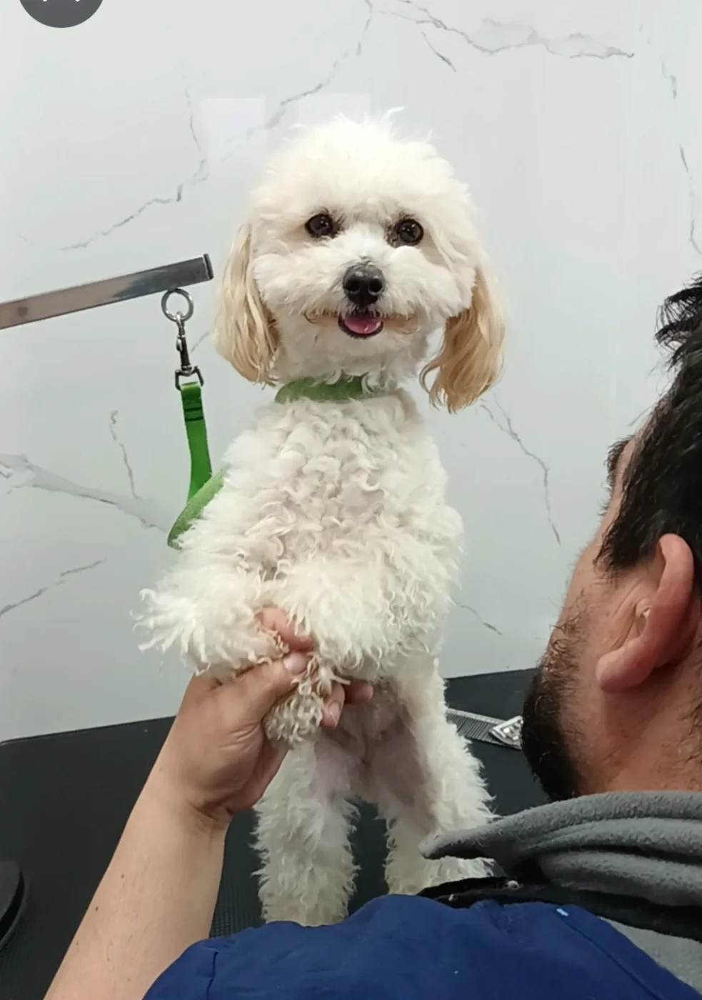
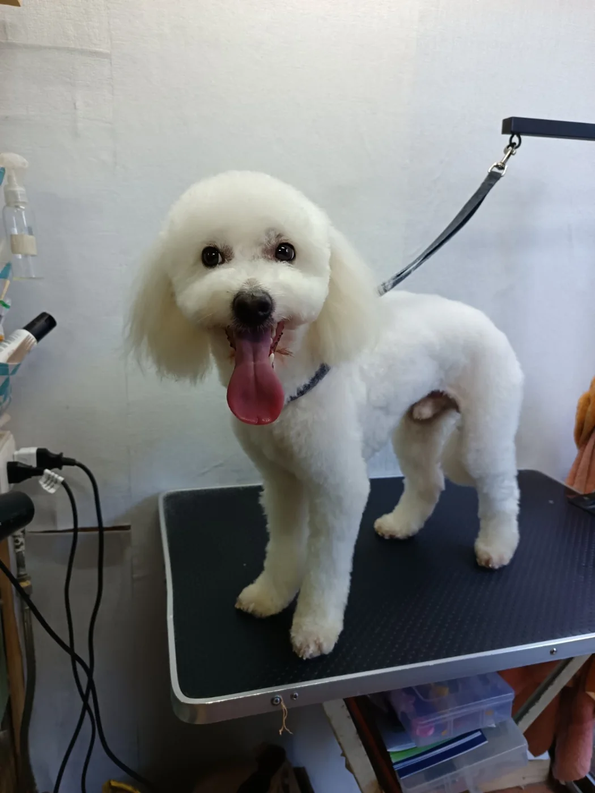
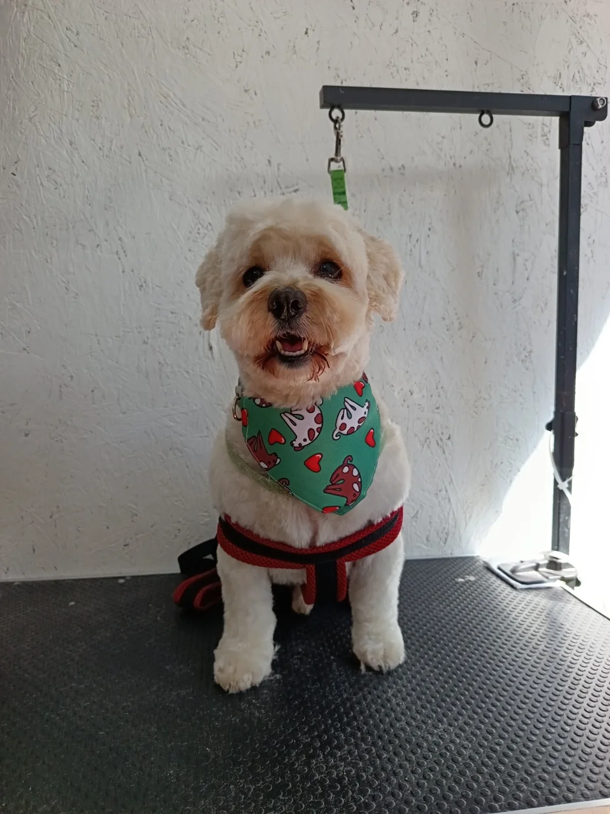
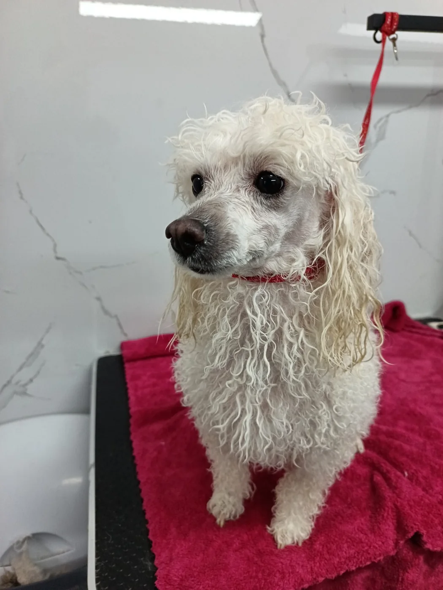

Cuidado según cada etapa.
Adaptamos cada atención al manto, comportamiento, edad y rutina de tu perro.
Toca una foto o un servicio para conocer más.

Primera peluquería
Una introducción progresiva al espacio y sus sensaciones.
Ver detalles
Primera peluquería
Una introducción progresiva al espacio y sus sensaciones.
Ver detallesEn su primera visita lo familiarizamos gradualmente con el espacio, las herramientas y los sonidos, respetando cómo responde durante la sesión.
El trabajo y el tiempo se adaptan a lo que pueda tolerar ese día. Buscamos que conozca la peluquería con calma y que las próximas visitas le resulten más familiares.
Consultar por WhatsApp
Servicio completo
Higiene y estética profesional según sus necesidades.
Ver detalles
Servicio completo
Higiene y estética profesional según sus necesidades.
Ver detallesEl servicio se define según el tipo y estado del manto, las preferencias conversadas y la tolerancia de tu perro.
- Baño, secado y cepillado.
- Desenredo básico y corte a máquina o tijera, según corresponda.
- Uñas, higiene externa de oídos, lagrimales y zona sanitaria.
Si al revisar el manto requiere un trabajo extraordinario, te lo informamos antes de comenzar.
Consultar por WhatsApp
Mantención continua
Peluquería completa, fechas agendadas y seguimiento individual.
Ver detalles
Mantención continua
Peluquería completa, fechas agendadas y seguimiento individual.
Ver detallesEn cada visita realizamos su peluquería completa habitual, ajustada a su manto y a lo conversado contigo:
- Baño, secado y cepillado.
- Desenredo básico o deslanado, según su manto.
- Corte a máquina o tijera, según corresponda.
- Corte de uñas e higiene de la parte externa de los oídos, lagrimales y zona sanitaria.
La Mantención Continua también incluye:
- Prioridad para elegir y dejar agendadas sus próximas fechas.
- Recordatorios antes de cada visita.
- Seguimiento de sus preferencias y de cómo evoluciona su manto.
- Acompañamiento para sostener su rutina y adaptar el cuidado a cada temporada.
- Reagendamiento sin costo adicional.
La frecuencia recomendada se define según las necesidades de cada perro. Si surge un trabajo extraordinario, te lo informamos antes.
Consultar por WhatsApp
Perros mayores
Una sesión adaptada, priorizando higiene y comodidad.
Ver detalles
Perros mayores
Una sesión adaptada, priorizando higiene y comodidad.
Ver detallesObservamos cómo se siente y ajustamos el ritmo a su tolerancia. Priorizamos la higiene y la comodidad; si lo necesita, enfocamos la sesión en lo más importante para ese día.
La seguridad y el bienestar guían cada decisión durante su atención.
Consultar por WhatsApp